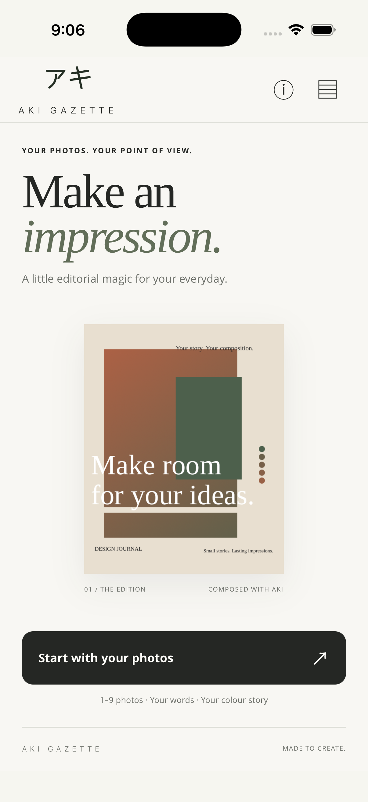
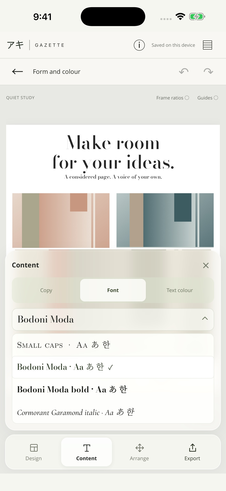
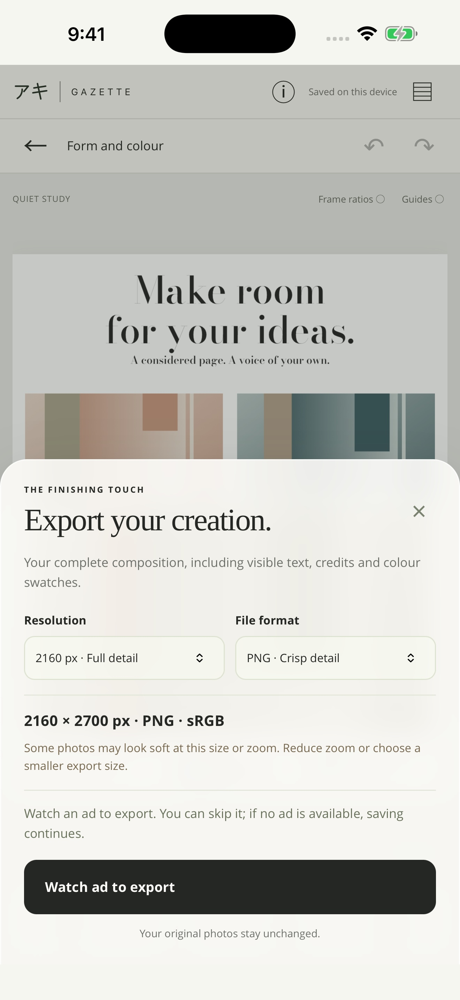

A visual journal
Bring a weekend, a trip or the details of an ordinary day onto one page.
Your photos. Your point of view.
Aki Gazette turns everyday photographs into considered compositions. Bring your images, find a layout, and give your story a voice of its own.
Free with export ads. No Gazette account required.

66layouts to make your own
20type presets with character
5formats for different stories
1–9photographs in a composition
A day worth remembering. A collection taking shape. An idea that needs a few words. Gazette gives photographs and text a place to meet.
Bring a weekend, a trip or the details of an ordinary day onto one page.
Arrange objects, work in progress or a set of photographs with a shared mood.
Give an image context with a headline, a caption or a longer personal note.
Pair your photographs and words for a launch, an invitation or a simple update.
Start with one photograph or bring together as many as nine. Gazette’s 66 layouts span calm editorial pages, bold covers, framed arrangements and cinematic compositions.
Browse by mood, choose a direction and see your own images in it. Each layout responds to your photo count and chosen format.
Let photographs reach the page edge. A full-page image or an uninterrupted arrangement puts the pictures first.
Explore diagonal divisions and trapezoidal frames. Photographs are cropped within the shapes, keeping their proportions intact.
Reserved spaces for headlines and supporting copy give text a clear place beside your photographs.
Go from a quiet serif to a bold headline. Twenty type presets include Bodoni Moda, Cormorant Garamond, Newsreader, Fraunces, Barlow Condensed and Syne.
Let a typography-led layout suggest its pairing, or choose your own. The fonts are included in the app, ready when inspiration arrives.

A layout gets the page moving. Arrange lets you refine the relationships between photographs, words, color and space.
Reposition photo frames within the page. Edge and center snapping help bring elements into alignment.
Reposition or zoom a photograph inside its frame, or fit the image when you want more of it in view.
Reorder or replace photographs as your story develops. Keep experimenting with the same composition.
Drag a selected element or nudge it a little at a time. Undo, redo and reset make exploration easier.
Use palette swatches as circles, squares, rounded squares or diamonds. Move the group into place.
Auto text color responds to the background. Choose your own text color when the page calls for it.
Make a portrait post, a square collection, a tall story or a landscape composition. Change the format while working to explore a different balance of pictures and space.
No Gazette account to create. Start with the photographs on your device and take the composition as far as you like.
Import one to nine images using the system photo or file picker. Select the set you want to work with; your original photographs stay unchanged.
Choose a format and layout, write your words, and explore type and color. Refine crops and positions until the page feels right.
Preview your export, choose PNG or JPEG and a resolution, then save to Photos, Files or the system share sheet.

Choose PNG for crisp detail or JPEG for a familiar, shareable image. Export offers 1080, 1440 and 2160 px resolution settings, with the resulting dimensions shown for your chosen format.
Save the finished composition to Photos, choose a place in Files or send it through the system share sheet.
Keep editable projects on your device and return to their photographs, text and layout later. Export a finished image when you are ready to share it.
PNG and JPEG flatten the composition into an image. Keep the local project if you want to change individual elements again.
Gazette does not require an account or upload your project photographs and text to an Aki server. The editor, layouts and fonts are bundled in the app.
Local projects are not a cloud backup. Deleting the app or clearing its data can remove them, so save finished images somewhere you want to keep them.
Advertising and consent services use the internet and may process device, advertising, usage and diagnostic data. Gazette requests nonpersonalized ads.
Permission to add an export to Photos is separate from selecting images to import. Files and sharing use the system destination you choose.
Gazette combines photographs, text and color details into a single composition. Use it for photo stories, visual journals, collections and announcements. Start with a layout, then adjust the page to make it your own.
Gazette supports iPhone with iOS 16 or later and iPad with iPadOS 16 or later. Open the public beta invitation on your device and follow TestFlight’s installation steps. The public App Store release is still in preparation.
Yes. Gazette is free with export ads. You choose Watch ad to export to begin saving a finished composition. An ad that is skipped, dismissed or unavailable does not prevent the export.
A composition supports one to nine photographs. Layouts adapt to the number you choose. The optional Symmetry setting is available for even counts of two, four, six or eight photographs.
Yes. Headline, supporting copy, label and caption fields are joined by up to eight extra text blocks. Choose a kicker, byline, quote, body passage or custom note, then adjust its alignment, position and rotation.
No account is required. The editor, templates and fonts are included in the app, and projects are stored locally. Advertising and consent need a connection. If an export ad is unavailable, Gazette still lets you continue saving.
No. Cropping, positioning and composition changes happen inside Gazette’s project. Export creates a separate finished image. Saving to Photos requires permission to add that exported image; choosing Files or Share uses the system destination you select.
A PNG or JPEG is a flattened image, so it does not keep separate editable frames and text. Reopen the saved project in Gazette to continue editing. Projects remain on that device and are not synced through an Aki account.
Send beta feedback from Gazette’s page in TestFlight, visit Gazette support or email akistudio.mobile@gmail.com. Include your device, iOS version, Gazette build and what you were trying to do. Send only photographs or screenshots you are comfortable sharing.
The public beta is available for iPhone and iPad through Apple’s TestFlight.
This is a beta version. The public App Store release is still in preparation. For beta testing, interact only with ads clearly labelled Test mode.